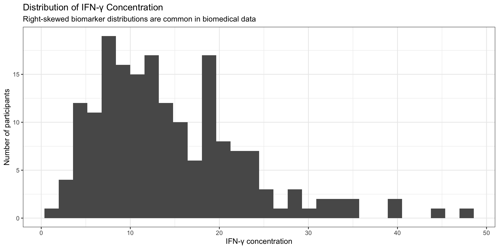
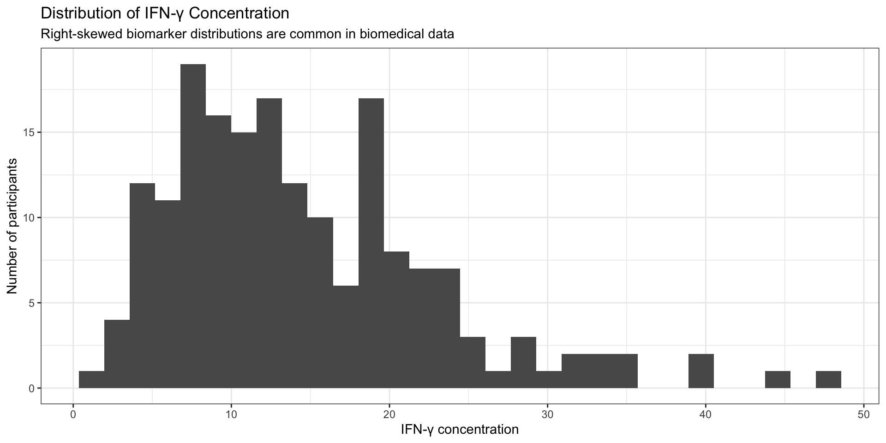
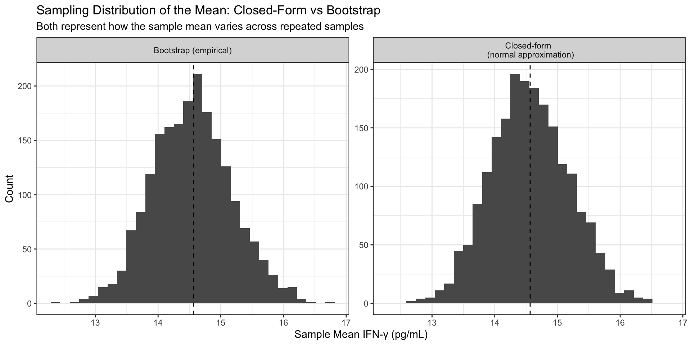

# A tibble: 5 × 8
id treatment age bmi ifng response infections log_ifng
<int> <chr> <dbl> <dbl> <dbl> <int> <int> <dbl>
1 1 Low dose 73 30.9 4.42 0 0 1.49
2 2 Low dose 53 28.2 1.16 0 2 0.148
3 3 Placebo 65 28.8 9.35 0 0 2.24
4 4 Low dose 73 30.2 4.96 0 1 1.60
5 5 High dose 46 26 27.1 1 0 3.30 Bootstrap Estimation for Mean and Median Biomarker Values
Lesley Chapman Hannah, Ph.D., M.S.
College of Graduate Studies
Northeast Ohio Medical University
Review
Previous lectures established what is typically estimated in statistical analysis—defining population quantities and constructing estimators to compare groups [i.e.: mean differences, risk differences, odds ratios]
Current lecture focuses on the following:
Given an estimator and a single observed dataset, how do we quantify its sampling variability when formulas rely on assumptions that may not reflect the observed data?
Bootstrap resampling provides a data-driven way to approximate the sampling distribution of an estimator
Lecture Overview
define bootstrap resampling as a method for estimating sampling variability
interpret a bootstrap standard error and bootstrap confidence interval
explain why robust estimators are useful for skewed or outlier-prone biomedical measurements
compare the mean and median as estimators of a typical biomarker value
choose an estimation strategy based on the estimand, data structure, assumptions, and scientific question
Bootstrap: Definition
bootstrap: an approach that approximates the sampling distribution of an estimator by repeatedly resampling from the observed data with replacement
Bootstrap Approach:
- treats the observed dataset as a proxy for the population
- generates many “new” samples by sampling with replacement
- computes the estimator in each resample
- uses the resulting distribution to quantify variability
Bootstrap: Definition
Goals within statistical estimation include:
- how much an estimate varies across samples
- how precise the estimate is
- what values are plausible for the population
Approaches rely on:
- known sampling distributions
- analytic standard error formulas
- assumptions about the data [i.e.: normality]
However in certain cases: assumptions do not align with observed data
closed-form methods for estimating uncertainty rely on assumptions about the data are true in order to estimate sample variability [i.e.: normality and simple variance structure]
bootstrap methods estimate uncertainty by repeatedly resampling the data and observing how the estimate changes
Overview: Bootstrap Procedure
Given observed data of size n:
1. Resample with replacement
- draw a sample of size n from the original data
2. Compute the estimator - i.e.: mean, median, risk difference
3. Repeat many times - i.e.: 1,000+ resamples
4. Form the bootstrap distribution - collection of all computed estimates
Resulting distribution approximates the sampling distribution of the estimator
Overview: Bootstrap Procedure
From the bootstrap distribution, we can estimate:
Standard error: measures variability across resamples
Confidence intervals: provides a plausible range for the population parameter
Shape of the sampling distribution :
- symmetry vs skewness
- sensitivity to outliers
- stability of the estimator
Example Study Background
Suppose investigators are conducting a clinical study of an immune-modulating therapy.
The therapy is designed to alter immune activity, so investigators measure interferon-gamma concentration after treatment.
Interferon-gamma (IFN-γ) is a cytokine involved in immune signaling and inflammatory activation.
In this study, IFN-γ is used as a continuous biomarker that may reflect the degree of immune response among participants.
Our study goals are as follows:
Determine:
What is a typical interferon-gamma (IFN-γ) concentration among patients receiving the immune-modulating therapy?
Because IFN-γ is continuous and often right-skewed:
- What is the average IFN-γ level in the study population?
- What is the median IFN-γ level, representing a typical patient?
Example Dataset
Overview
- each row represents one participant
id: participant identifiertreatment: placebo, low dose, or high doseifng: interferon-gamma concentration [continuous and positive]response: whether the participant had a clinical response [binary]infections: number of infections during follow-up [count]ageandbmi: patient characteristics- many participants have low-to-moderate values
- fewer participants have very high values
- upper tail can pull the mean upward
Visualize the Biomarker Distribution

Interpretation of the Distribution
- histogram shows the distribution of interferon-gamma (IFN-γ) concentrations across study participants
- distribution is right-skewed [positively skewed] \(\rightarrow\) because of the skewness the mean is likely larger than the median
Visualize the Biomarker Distribution

Interpretation of the Distribution
Note: mean may overstate a typical biomarker level due to extreme values
- most participants have moderate IFN-γ values [10–15 pg/ml]
- smaller number of participants have substantially higher values, extending toward 40–50
Estimation Targets
We focus on two estimators of a “typical” value:
- mean IFN-γ → average leve [sensitive to extremes]
- median IFN-γ → represents the central point of the distribution [half the observed immune responses fall below and half fall above] without being influenced by extreme measurements
Let:
\[ \theta_{mean} = \text{population mean}, \quad \theta_{median} = \text{population median} \]
Goal: compute point estimates and quantify uncertainty using two approaches:
- analytic [non-bootstrap estimation]
- bootstrap estimation
Bootstrap Appraoch
bootstrap resampling: approximates repeated sampling using the observed data
Each bootstrap iteration executes the following:
1. resample IFN-γ values with replacement
- after a value is selected, it is returned to the dataset and can be selected again
- allowing the bootstrap sample to:
- maintain same size as the original dataset
- note that each resample may include some participants more than once and may omit some participants
2. compute the estimator on that resampled dataset
3. store the result
4. repeat many times
After many iterations the collection of estimates approximates the sampling distribution of the estimator
Compute Sample Estimates
mean_ifng <- mean(biomarker_df$ifng)
median_ifng <- median(biomarker_df$ifng)
tibble(
mean_ifng = mean_ifng,
median_ifng = median_ifng
)# A tibble: 1 × 2
mean_ifng median_ifng
<dbl> <dbl>
1 14.6 12.5Interpretation
- mean IFN-γ [14.6 pg/mL] : average across all participants
- median IFN-γ [12.5 pg/mL] : value that splits the sample in half
- mean is larger than the median and consistent with right-skewed distribution where higher values pull the average upward
Note each of these values are point estimates:
- each is a single-number summary computed from this sample
- each serves as an estimate of a corresponding population quantity
Compute Sample Estimates
mean_ifng <- mean(biomarker_df$ifng)
median_ifng <- median(biomarker_df$ifng)
tibble(
mean_ifng = mean_ifng,
median_ifng = median_ifng
)# A tibble: 1 × 2
mean_ifng median_ifng
<dbl> <dbl>
1 14.6 12.5Key Limitations with current values
Estimates answer:
What did we observe in this sample?
Estimate values do not answer:
How much would this estimate change if we repeated the study?
Motivation for resolving limitations
- a different sample of patients could produce different values
sampling variability: amount of variation across sample- without quantifying that variability it is difficult to assess:
- how precise these estimates are
- how much confidence to place in them
- Bootstrap methods allow us to estimate how stable these values are across repeated samples
Determine Mean Uncertainty
Compute the following values for the sample mean:
- standard error [SE] : metric that describes variability of the estimator
- confidence interval : describes plausible population values
\[ SE(\bar{x}) = \frac{s}{\sqrt{n}} \]
Assumptions:
- sample is sufficiently large
- sampling distribution of the mean is approximately normal extreme skewness or outliers do not dominate the sample
Determine Mean Uncertainty
mean_se <- sd(biomarker_df$ifng) / sqrt(nrow(biomarker_df))
mean_ci <- mean_ifng + c(-1.96, 1.96) * mean_se
tibble(
mean = mean_ifng,
se = mean_se,
lower = mean_ci[1],
upper = mean_ci[2]
)# A tibble: 1 × 4
mean se lower upper
<dbl> <dbl> <dbl> <dbl>
1 14.6 0.622 13.3 15.8Interpretation
- population average IFN-γ: 14.6 pg/mL
- true population mean IFN-γ lies between 13.3 and 15.8 pg/mL
- standard error: 0.622
- if we repeated the study many times \(\rightarrow\) mean would vary by about 0.6 units
Estimating Median
- median is often an ideal metric for skewed data
- metirc represents a typical patient without being influenced by extreme values.
- median is not defined by magnitude
- depends on the ordering of the data
- not the numerical contribution of each value
- small changes near the center can shift the median
- large changes in extreme values may have no effect
Median Estimation
# A tibble: 1 × 5
median_ifng iqr_ifng q25 q75 q90
<dbl> <dbl> <dbl> <dbl> <dbl>
1 12.5 10.8 8.33 19.2 24.3Interpretation
Median
- median IFN-γ : 15.62 pg/mL
Interquartile Range [IQR]
IQR: 7.99 pg/mL
- width of that middle range
- indicates a moderate spread around the typical value
Median Estimation
# A tibble: 1 × 5
median_ifng iqr_ifng q25 q75 q90
<dbl> <dbl> <dbl> <dbl> <dbl>
1 12.5 10.8 8.33 19.2 24.3Interpretation
q90: describes upper tail of the distribution or unusually high IFN-γ responses
Q90 = 23.27 pg/mL
- 90% of participants are below this value
- top 10% of patients have values exceed ~23 pg/mL
First [Q1] and Third Quartile
Q25 = 11.52 pg/mL Q75 = 19.51 pg/mL
- middle 50% of participants have IFN-γ values between ~11.5 and ~19.5 pg/mL
Distribution Comparison: Closed-Form vs Bootstrap

Objective(s):
- compare two approaches for approximating IFN-γ population mean
- evaluate whether a closed form approximation and a data-driven method [bootstrap] produce similar representations of uncertainty
Distribution Comparison: Closed-Form vs Bootstrap
Distribution Comparison: Closed-Form vs Bootstrap

Comparison
- each histogram represents ~2000 possible sample means
- dashed line marks the observed sample mean
- both panels show ~2000 possible values of the sample mean
- bootstrap generates values by resampling full datasets
- closed-form approach generates values directly from a theoretical normal distribution
- both bootstrap and closed-form methods produce similar sampling distributions for the mean
- indicates that bootstrap based estimate is stable across repeated samples
Summary: Bootstrap and Robust Estimation
Bootstrap and robust methods solve related but distinct problems.
Bootstrap
- estimates uncertainty
- approximates the sampling distribution
- supports standard errors and intervals
Robust estimation
- improves stability
- reduces sensitivity to extreme values
- helps summarize skewed biomedical data
Together, they strengthen estimation when classical assumptions are fragile.
Summary
estimates vary across repeated samples
point estimates summarize values from a single dataset
sampling variability determines how estimates change
In practice:
different samples produce different estimates
stability of an estimate depends on data structure and sample size
bootstrap methods: resample observed data to approximate the sampling distribution
multiple approaches can yield similar conclusions
agreement between methods supports stability of the estimate